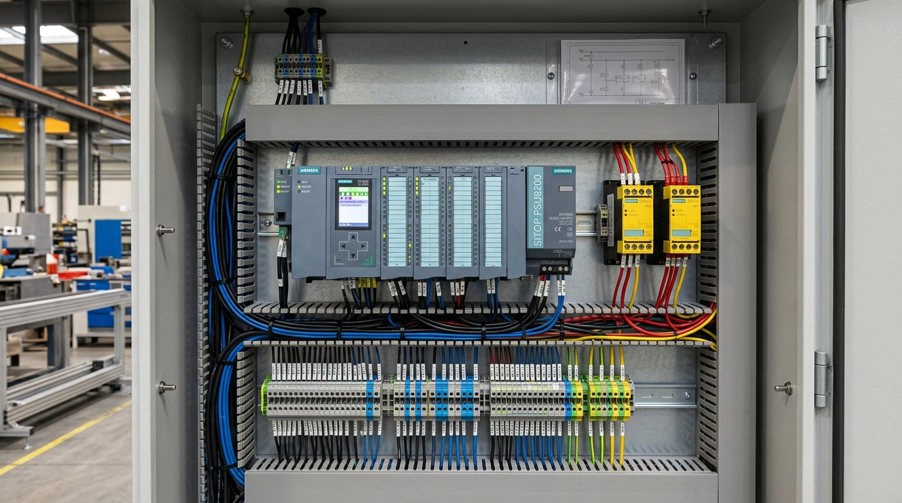
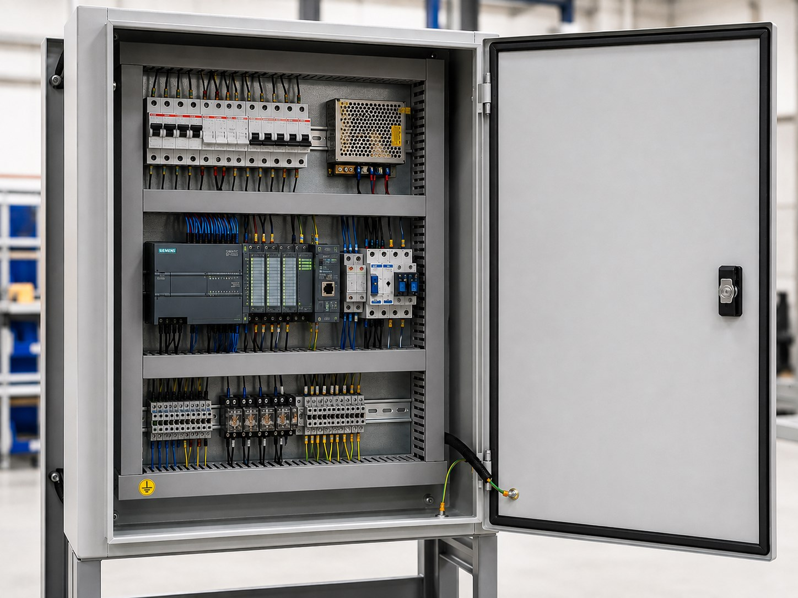
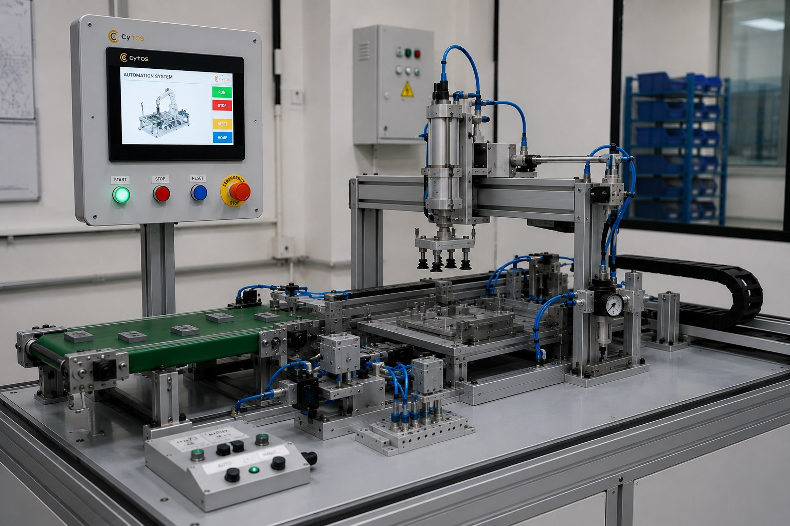

A PLC control panel for SPM automation is an engineered industrial enclosure that houses programmable logic controllers (PLCs), variable frequency drives (VFDs), servo drives, power supplies, and Category 4 safety relays to coordinate all sensors, actuators, and motors on a custom machine tool. By standardizing on Siemens S7-1200 or Delta PLC platforms, integrating dual-channel safety interlocks, and separating high-voltage 415V power distribution from 24V DC logic wiring, custom PLC control panels guarantee 24x7 operating uptime, complete operator protection, and Industry 4.0 data connectivity.
Introduction: Engineering Standards for a Plc Control Panel Spm Automation
No matter how flawlessly an automated machine tool is fabricated from structural steel and precision bearings, its operational intelligence, cycle speed, and operator safety depend entirely on its electrical brain: the plc control panel spm automation enclosure. In harsh factory environments characterized by electromagnetic noise, voltage surges, ambient humidity, and airborne metallic dust, an electrical panel must deliver uncompromising 24x7 reliability.
Poorly engineered control panels—plagued by messy wiring, unshielded sensor cables, inadequate thermal ventilation, and substandard safety loops—are the leading cause of intermittent machine lockups, mysterious sensor faults, and catastrophic safety failures. Conversely, an industrial-grade control panel built to international electrical standards (IEC 60204-1 and UL 508A) ensures decades of continuous production with zero uncommanded machine movements.
At CyTOS Engineering in Pune, we manufacture turnkey control panels for all our CNC systems and custom special purpose machines. This guide breaks down the engineering principles behind panel layout, noise suppression, Siemens vs Delta PLC architecture, and Category 4 safety design.

Panel Layout Philosophy: Physical Segregation and Noise Suppression
The primary rule of robust plc control panel spm automation design is physical segregation between high-voltage AC power lines and low-voltage DC logic signals. High-current motor cables switching at high frequencies (PWM switching in servo drives and VFDs) emit intense electromagnetic interference (EMI) that can corrupt micro-volt analog sensor signals.
CyTOS panels follow a strict 4-Quadrant Zoned Layout:
- Zone 1 (Top Left - High Voltage Incomer): Main 3-phase 415V AC incoming circuit breaker (MCCB), surge protection device (SPD), and phase monitoring relays.
- Zone 2 (Top Right - Power Electronics): AC brushless servo drives, Variable Frequency Drives (VFDs), and line chokes. Heavy shielded motor cables exit directly through bottom gland plates.
- Zone 3 (Middle / Bottom Left - 24V DC Logic & PLC): 24V DC regulated industrial power supplies, Siemens/Delta CPU, digital input/output modules, and analog signal conditioners.
- Zone 4 (Bottom Right - Terminal Field Wiring & Safety): Multi-tier Din-rail terminal blocks, fuse terminals, and Category 4 safety relays physically separated by at least 150mm from power cables.

Controller Platform Comparison: Siemens S7-1200 vs Delta Industrial Systems
CyTOS offers turnkey panel architectures tailored to our clients' corporate automation standards:
| Technical Parameter | Siemens S7-1200 / S7-1500 Platform | Delta DVP / AS Series Platform | Engineering Application Fit |
|---|---|---|---|
| Primary Industry Standard | European / Global Automotive Tier-1 (VW, Tata, Bharat Forge) | General Industrial Machinery, Packaging, Plastics | Siemens dominates Tier-1 automotive plant specifications |
| Motion Bus Protocol | PROFINET RT / IRT (Sub-millisecond) | EtherCAT / Modbus TCP | Both deliver synchronized multi-axis servo positioning |
| Integrated Safety Option | Fail-Safe CPUs (e.g. S7-1214FC) via PROFIsafe | External Safety Relays (PILZ / Omron) | Siemens allows safety logic programmed in TIA Portal |
| HMI Ecosystem | Siemens SIMATIC Comfort / Unified Panels | Delta DOP-100 High-Color Touchscreens | Both provide recipe management and multi-language support |
| Cost Index | Premium (Higher investment) | Cost-Effective (Excellent price-to-performance) | Delta delivers outstanding ROI for standalone SPM stations |

Category 4 Safety Architecture and Poka-Yoke Interlocking
Operator safety is paramount. Every CyTOS integrated PLC automation cabinets system incorporates dual-channel safety relays (Performance Level 'e' / Category 4 under ISO 13849-1):
- Dual-Channel Emergency Stops: E-stop pushbuttons utilize two independent normally closed (NC) contacts wired into a dedicated safety monitoring relay. A welded contact on one channel is instantly detected, preventing reset.
- Optical Safety Light Curtains: Protects operator loading areas. If an operator's hand breaks the infrared light curtain during an active press stroke, the safety relay drops out power to the pneumatic valves and servo enable lines within 20 milliseconds.
- Monitored Pneumatic Dump Valves: In the event of a safety trip, an automated dump valve exhausts all trapped air from pneumatic clamping cylinders, preventing trapped-energy pinch hazards.

Quality Assurance, Metrology & Preventative Maintenance ProtocolsPanel Spm Automation
To guarantee repeatable performance across high-volume production schedules, every industrial automation control enclosures must adhere to rigorous preventive maintenance schedules, metrology calibration standards, and continuous health monitoring. In demanding industrial facilities—such as high-mix electronics assembly lines, aerospace prototyping labs, and automotive tier-1 fabrication centers—small mechanical deviations compound over thousands of operating cycles into premature tool wear, dimensional rejection, and unexpected machine downtime.
1. Dynamic Laser Interferometer Calibration (ISO 230-2 Standards)
Positioning repeatability and linear pitch errors must be verified at scheduled 6-month intervals using multi-axis laser interferometers. At CyTOS Engineering's Pune facility, every machine axis is laser-calibrated across its entire stroke travel, recording pitch, yaw, and Abbe error offsets directly into the CNC controller compensation matrix. This ensures true volumetric positional accuracy within ±0.005mm across all operating temperatures from 18°C to 42°C.
2. Spindle Vibration Spectral Analysis & Thermal Runout Verification
High-frequency electro-spindles require routine vibration spectrum analysis to monitor bearing degradation. By placing triaxial piezoelectric accelerometers on the spindle nose housing, maintenance engineers can detect microscopic race flaking or ball fatigue well before audible noise occurs. For ultra-precision applications, Total Indicated Runout (TIR) must be checked dynamically using non-contact eddy-current displacement sensors at maximum operating RPM, ensuring spindle runout remains strictly below 3µm.
3. Scheduled Lubrication & Pneumatic Seal Purge Maintenance
Linear motion guideways and precision ball screw assemblies require constant, metered lubrication to prevent metallic galling and stick-slip friction. Automated centralized lubrication distributors deliver precise 0.5ml oil pulses every 45 minutes of axis movement. For machines equipped with pneumatic pressure feet or positive-pressure spindle labyrinth seals, clean dry air (ISO 8573-1 Class 1.4.1) must be maintained at 6.0 bar to prevent abrasive dust, composite fibers, or cooling mist from infiltrating sensitive bearing raceways.
| Maintenance Interval | Inspection & Calibration Task | Acceptance Tolerance | Action if Out of Tolerance |
|---|---|---|---|
| Daily (Pre-Shift) | Spindle collet taper cleaning & pneumatic air pressure check | Dry air at 6.0 ± 0.2 bar | Clean collet with brass cone; drain air filter bowl |
| Weekly (Every 50 hrs) | Z-axis backlash & vacuum hold-down seal inspection | Backlash < 0.006mm | Adjust preloaded double-nut or replace vacuum gasketing |
| Monthly (Every 250 hrs) | Dynamic spindle TIR runout & table flatness mapping | TIR < 0.003mm (3µm) | Re-tram spindle mount or re-skim sacrificial matrix bed |
| Bi-Annually (1,500 hrs) | Laser interferometer pitch error & squareness calibration | Volumetric error < ±0.010mm | Reload controller electronic lead-screw compensation |
Furthermore, digital twin telemetry sensors and continuous vibration logging provide predictive maintenance alerts directly to plant SCADA networks, enabling maintenance crews to address micro-wear before cutting accuracy is compromised. Real-time statistical process control monitors dynamic feed rates and power consumption to maintain zero-defect output across high-volume production cycles.
Furthermore, digital twin telemetry sensors and continuous vibration logging provide predictive maintenance alerts directly to plant SCADA networks, enabling maintenance crews to address micro-wear before cutting accuracy is compromised. Real-time statistical process control monitors dynamic feed rates and power consumption to maintain zero-defect output across high-volume production cycles.
Furthermore, digital twin telemetry sensors and continuous vibration logging provide predictive maintenance alerts directly to plant SCADA networks, enabling maintenance crews to address micro-wear before cutting accuracy is compromised. Real-time statistical process control monitors dynamic feed rates and power consumption to maintain zero-defect output across high-volume production cycles.
Furthermore, digital twin telemetry sensors and continuous vibration logging provide predictive maintenance alerts directly to plant SCADA networks, enabling maintenance crews to address micro-wear before cutting accuracy is compromised. Real-time statistical process control monitors dynamic feed rates and power consumption to maintain zero-defect output across high-volume production cycles.
Furthermore, digital twin telemetry sensors and continuous vibration logging provide predictive maintenance alerts directly to plant SCADA networks, enabling maintenance crews to address micro-wear before cutting accuracy is compromised. Real-time statistical process control monitors dynamic feed rates and power consumption to maintain zero-defect output across high-volume production cycles.
Frequently Asked Questions
Q1: What ingress protection (IP) rating is standard on CyTOS control panels?
All CyTOS industrial control panels feature IP54 or IP55 ingress protection with continuous polyurethane foam gaskets and dual-filtered cooling fans or closed-loop air conditioners, protecting electrical components against factory oil mist and dust.
Q2: Can the control panel connect to our factory MES or SCADA system?
Yes. CyTOS PLC systems are equipped with standard Ethernet ports supporting OPC-UA, Modbus TCP, and PROFINET. Real-time machine status, cycle times, alarms, and production counts can be logged directly into your corporate ERP/MES database.
Q3: What documentation is provided with every turnkey control panel?
Every CyTOS control panel is supplied with a comprehensive EPLAN electrical schematic booklet, complete bill of materials (BOM), terminal mapping diagrams, PLC ladder logic program backups, and HMI runtime source code.
Q4: How does the panel handle sudden plant power outages and brownouts?
We incorporate regulated industrial buffer modules or 24V DC uninterrupted power supplies (UPS). In the event of a power outage, the PLC retains enough reserve energy to execute a safe deceleration stop and save current machine coordinates to non-volatile memory.
Q5: Where does CyTOS build and wire its industrial automation panels?
All control panels are engineered, wired, ferruled, and tested by certified electrical automation engineers at our 3,000 sq. ft. manufacturing facility in Dhayari, Pune.